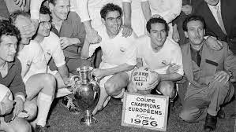
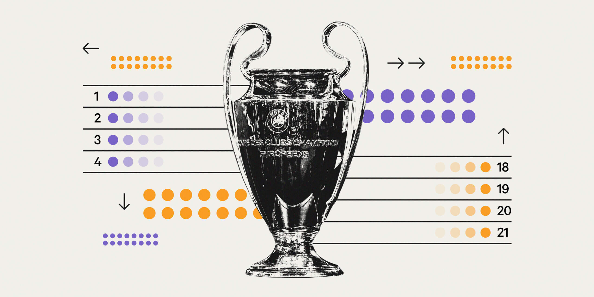
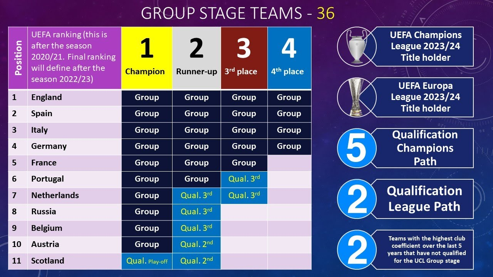

History
Liga Champions UEFA (disingkat UCL, bahasa Inggris: UEFA Champions League) atau Liga Champions Eropa (LCE) yang sebelumnya bernama Piala Eropa (European Cup) adalah sebuah kompetisi sepak bola antarklub oleh UEFA dan diikuti oleh klub dari liga atau divisi tertinggi Eropa. Kompetisi ini merupakan salah satu turnamen paling bergengsi di dunia dan kompetisi antarklub paling bergengsi di sepak bola Eropa, yang hanya diikuti oleh juara liga nasional (dan juga juara kedua untuk beberapa negara) dari setiap asosiasi nasional anggota UEFA.
Sejarah Awal
Kejuaraan ini pertama kali dicetuskan oleh salah satu majalah olahraga Prancis. Trofi berbentuk piala yang dijuluki "The Big Ears" (Telinga Besar) dan trofi pertama berbeda dengan yang sekarang diperebutkan (dibuat oleh Stadellman). Piala yang diperebutkan sekarang adalah edisi ke-6. Pada awalnya kejuaraan memperebutkan piala bernama Piala Juara Klub Eropa (European Champion Clubs Cup), yang biasanya disingkat menjadi Piala Eropa (European Cup, dan berbeda dari Piala Eropa seperti yang dikenal di Indonesia sekarang ini yang merujuk kepada Piala Kejuaraan Eropa). Kejuaraan ini dimulai pada musim 1955/56 dengan menggunakan sistem gugur dua leg, yaitu setiap tim bermain dua pertandingan, satu tandang dan satu di kandang, dan tim dengan skor rata-rata tertinggi maju ke babak berikutnya. Hanya tim-tim juara liga di masing-masing negara, ditambah dengan pemegang juara pada saat itu, yang berhak ikut ajang kompetisi ini.
Format Pertandingan
Turnamen dimulai dengan penyisihan grup yang terdiri dari 32 tim, dibagi menjadi delapan grup yang terdiri dari empat tim. Pengundian untuk menentukan tim mana yang masuk ke setiap grup diunggulkan berdasarkan performa tim di kompetisi UEFA dan tidak ada grup yang boleh berisi lebih dari satu klub dari setiap negara. Setiap tim memainkan enam pertandingan penyisihan grup, bertemu dengan tiga tim lainnya di kandang dan tandang grupnya dalam format round-robin. Tim pemenang dan runner-up dari masing-masing grup kemudian maju ke babak berikutnya. Tim urutan ketiga memasuki Liga Eropa UEFA. Untuk tahap selanjutnya yaitu babak 16 besar, tim pemenang dari satu grup bermain melawan runner-up dari grup lain dan tim dari asosiasi yang sama tidak boleh diundi satu sama lain. Dari perempat final dan seterusnya, pengundian sepenuhnya acak tanpa perlindungan asosiasi.
Kualifikasi
Kualifikasi untuk Liga Champions ditentukan oleh posisi tim-tim di liga domestik dan melalui sistem kuota; negara-negara yang mempunyai liga domestik yang lebih kuat diberikan lebih banyak tempat. Klub yang bermain di liga domestik yang lebih kuat juga mulai ikut pada babak yang lebih akhir. Misalnya, tiga liga terkuat, menurut peringkat UEFA, akan melihat juara dan runner-upnya langsung masuk ke babak fase grup, dan peringkat ketiga dan keempat masuk pada babak kualifikasi ketiga. Ada pengecualian pada peraturan ini; juara bertahan Liga Champions lolos secara otomatis ke babak grup tanpa tergantung posisi akhirnya di liga domestik. Dalam perputaran kompetisi liga Champion klub-klub bertarung sengit untuk menempati posisi teratas sehingga layak ikut serta kejuaraan ini.